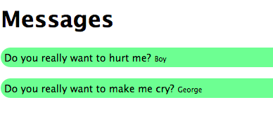

This lab is worth 5 points.
Lab Objectives
- Practice using JavaScript associative arrays.
- Practice using the JavaScript
XMLHttpRequestobject - Practice parsing JSON data.
- Understand the limitations of client-side JavaScript.
Overview
In this lab, you will load JSON data using JavaScript's XMLHttpRequest object, parse the JSON file, and output the data to a section of a completely loaded HTML file.
Getting Started
- Download the file
messages.zipdirectly into the foldercomp20-usernameon your computer (the same folder you used for Lab 4 and 5). - Unzip the ZIP file. A folder
messageswith files will be created. - Remove the ZIP file
messages.zip - Run
git add . - Run
git commit -m "Starting Lab 6" - Run
git push
You are provided with four files in the messages directory:
index.html- HTML pagestyle.css- An empty stylesheet. You are free to modify this file.data.json- A file containing JSON datalab.js- Where you will write all your JavaScript code.
Instructions, Part 1: Loading the Data from the data.json file
Review the index.html file. Your job is to modify the lab.js file to open the JSON file using XMLHttpRequest, parse the JSON data, and output the messages in the "messages" section of the HTML, as ordered in JSON file. IMPORTANT: you are not allowed to modify the HTML file! You are also not allowed to use jQuery! However, you are free to display the messages on the page however you want them to look as I am giving you a blank CSS file to modify.
Example Output

Viewing Your Work and Submitting the Assignment
Using the XMLHttpRequest to open a file requires your page to be hosted on a web server. Alas, simply opening the index.html page on a web browser will not work for this assignment --and you will need to explain why, more later. You must create branch named gh-pages on your private GitHub repo and then view your work via http://tuftsdev.github.io/comp20-username/messages. Think of a branch in Git as a new project history or a new idea. If you create a specific branch named gh-pages in GitHub, content in the branch will be served to the public.
To create the gh-pages branch in your private Git repository, run git branch gh-pages. You only need to run this once! If you already started Assignment 2 and did this step already, you do not need to do it again.
To push work on your private Git repository under your new gh-pages branch to GitHub, run git push origin gh-pages.
To switch back to using your default master branch, run git checkout master.
To switch back to using your gh-pages branch, run git checkout gh-pages.
To submit this assignment, your work must be in both the gh-pages and master branches of your private Git repository on GitHub.
To make sure that both your gh-pages and master are in sync, you must merge them. To replace everything that is in your gh-pages branch with everything that is in the master branch, run git checkout gh-pages ; git merge -X theirs master. Or to replace everything that is in your master branch with everything that is in the gh-pages branch, run git checkout master ; git merge -X theirs gh-pages.
Debugging
Be sure to look at your JavaScript console for any errors.
Instructions, Part 2: Loading the Data Given a URI
If the first part worked, instead of loading the data from the data.json file, try loading the JSON data from a URI (yes, a remote location). Replace data.json in your lab.js to http://messagehub.herokuapp.com/messages.json. The JSON looks very similar with the same important fields. You do not need to modify any other code in your JavaScript. Does it work?
The README File
Every assignment and lab shall include a README file that describes the work. This description must:
- Identify what aspects of the work have been correctly implemented and what have not.
- Identify anyone with whom you have collaborated or discussed the assignment.
- Say approximately how many hours you have spent completing the assignment.
- Be written in either text format (
README.txt) or in Markdown (README.md). No other formats will be accepted.
For this lab, you must also answer an important question: is it possible to request the data from a different origin (e.g., http://messagehub.herokuapp.com/) or from your local machine (from file:///) from using XMLHttpRequest? Why or why not? Please read the following three articles, in order, to help you answer this question:
- https://en.wikipedia.org/wiki/XMLHttpRequest. Yes, you may be balking that I am making you read a Wikipedia article but there is a very important line in the overview. This serves as good background reading.
- https://developer.mozilla.org/en-US/docs/Web/Security/Same-origin_policy
- https://security.stackexchange.com/questions/8264/why-is-the-same-origin-policy-so-important
Assessment
- (1 point) The basics (e.g., file names, Git commit messages)
- (2 points) Your JavaScript code that parses the JSON, modifies "messages" section of HTML
- (2 points) The
README - (-5.0 point) Outputs exist in JavaScript console
- (-5.0 point) You modified the HTML
- (-5.0 point) You used jQuery